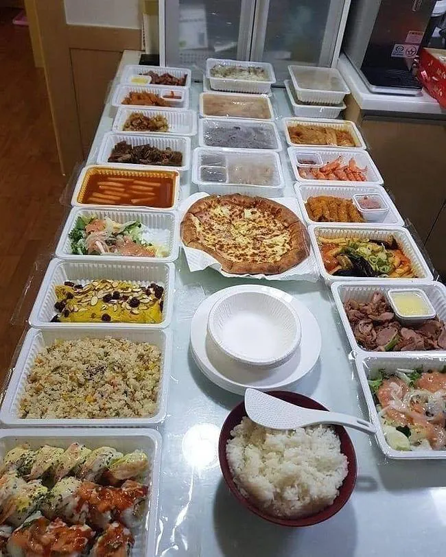
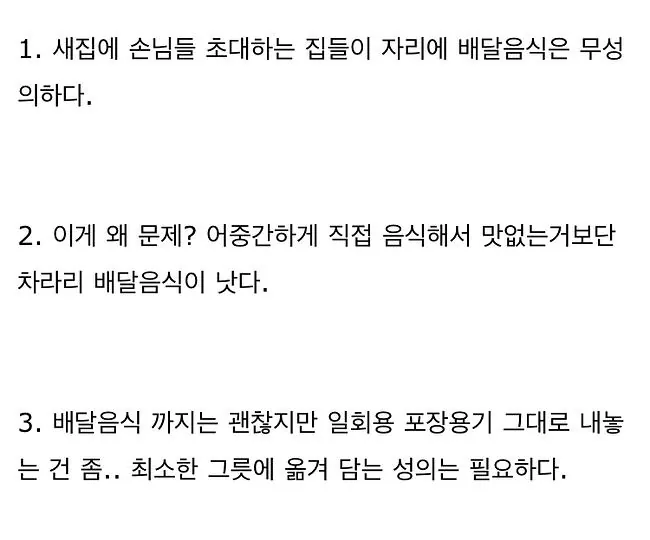

존나 좋기만 하구먼
이거 가지고 문제 있다고 하는 놈들이 문제


존나 좋기만 하구먼
이거 가지고 문제 있다고 하는 놈들이 문제
진짜 최고아닙니까 이거...
이야 맛있겠네
내가 좋아하는 피자아니라서 논란
찜닭어디쒀
저거로 뭐라고 하면 꼰대 확정임
요즘 시대가 어느땐데 정성이네 어쩌네 이러고 있어
난 존나 꼰대라 접시에 덜어주는게 좋음
좋은데 내가 초대한거였으면 접시정도는 덜어놓겠는데
초대받은거 간거면 뭐든
와 저걸 다 시키네.... 얼마나 들었을까
시발 최소50이다 이거
신혼집에 저거 다 담을 그릇 선물해줬음?
그럼 ㅇㅈ
라면도 없는데 식은밥 퍼오다니
이건 성의가 좀 없네
근데 통일해서 놔두니까 플라스틱용기여도 뷔페느낌나서 좋은데? 앞접시 하나씩 줬을거아냐 거기덜어먹으면되지
피자가 한판이라서 논란 1인 2조각은 해야지
이건 배달유무가 문제가 아니라 메뉴가 문제아니냐?… 분식이라니? 대접한다는 의미가 아니라 온김에 배나채우라는의미같음.. 보통 회식을 떡볶이같은걸론 안하잖아… 고기나 회? 같은걸로 해야지 말야… 내가너무 늙크크냐?
온김에 배나 채워 대머리괴민아
1만 걸러도 인생 편하다
남자들이면 걍 죽닥ㅊ피고 맛나게먹음